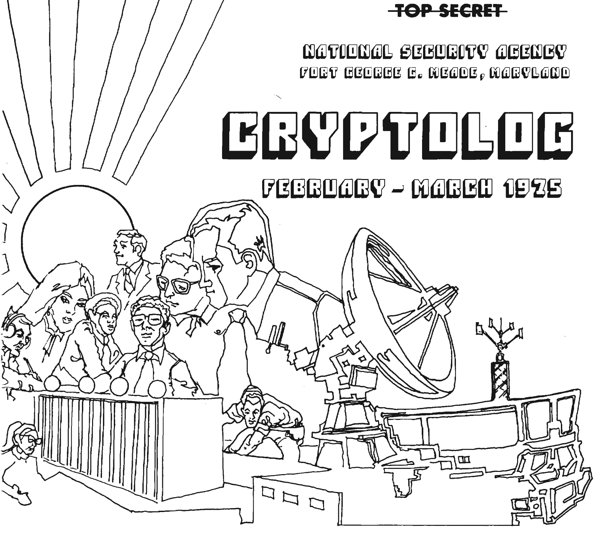

Logline
Our thoughts are the material of the Internet. In the midst of ever-evolving man/machine integration, I’ll use declassified documents to show how politicians have used computers to monitor these thoughts in the past, and suggest new ways of thinking about intimacy and computers in the future.
Synopsis
It’s time to recontextualize the privacy debate. This starts by getting rid of the word privacy and its kin, data. We don’t have data, we have thoughts. Our thoughts are extremely important to us. Some thoughts are meant to be broadcast to the world, while others are only shared with our most trusted partners.
Advertisers and political parties have long wanted our trust. They spend billions of dollars to bridge that trust, but without a complete picture of who we are, their message sounds as sincere as a love confession using a megaphone. The Internet changes this. We use the network to show off our successes and understand our insecurities. We satiate our base desires and catalogue our eating, sleeping, and exercise habits.
The picture is there, it’s just about putting it together.
With a more complete picture, a loud megaphone can become a well-crafted love note. Computers make it possible to paint these pictures at scale because they can monitor large amounts of human activity. Not surprisingly, the first computer with this ability was built by IBM for the United States National Security Agency in 1962.
The NSA is a military organization whose charter is to conduct signals intelligence - basically monitor and exploit communications. Advanced computing has always been at the core of the organization. Both cryptographic and natural language machine analysis present still-unsolved engineering problems. For decades, the NSA has attacked these issues with some of the most advanced supercomputers on the planet.
NSA supercomputers spent the 1960s and 1970s looking for keywords that might reveal Soviet collusion by civil rights leaders or anti-government sentiments from those who oppose the Vietnam war. The politicalization of the US Intelligence community was only revealed by the fallout from President Nixon’s Watergate scandal and later described as "probably the largest governmental interception program affecting Americans ever undertaken” by Senator Frank Church.
Today’s NSA still runs the most powerful computers in the world. But they are joined by private companies with their own advanced systems, other governments, and individuals, all transacting on the highest fidelity communications medium the world has ever seen - the Internet.
Organizations have been building advanced computers with the sole purpose of recording and analyzing our communications and behaviors for decades. As we share our most intimate thoughts with the computers we carry with us, we leave ourselves increasingly vulnerable to those who may want to exploit us. The lessons of the 1960s and 1970s show us the path forward: increased transparency and individual empowerment.